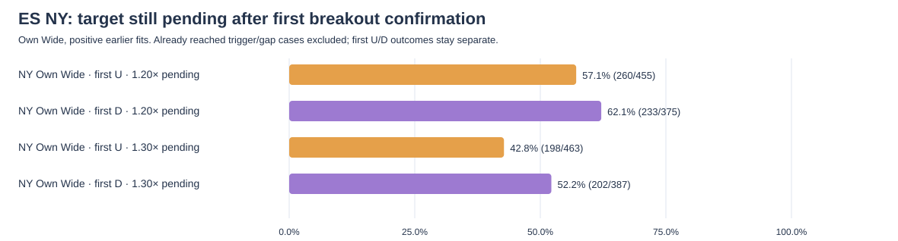
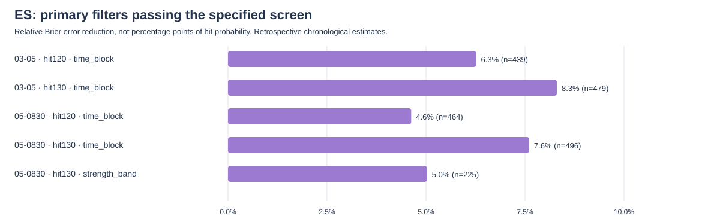
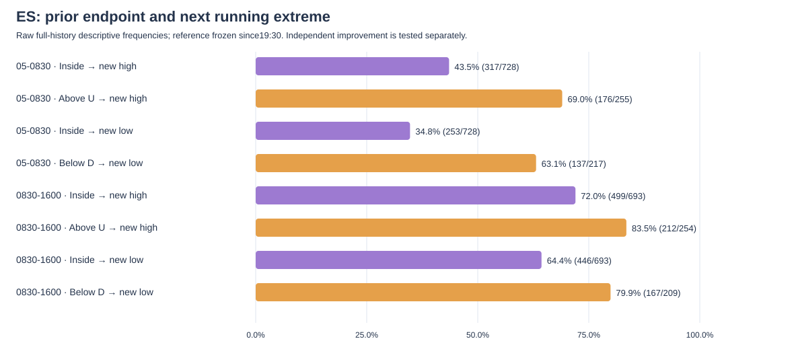

SESSIONPATH RESEARCH · WAN HO.LUI · 28 OCTOBER 2026ES futures: independent SessionPath replication
Native explicit quarterly ES contracts · 2022-01-03–2026-10-20 · New York session clock · research results before deployment
1. Source coverage and timing
20explicit ES delivery contracts
499,564unique native five-minute bars
3576eligible first-breach windows
2356endpoint transitions
Trading windows are [03:00,05:00), [05:00,08:30) and [08:30,16:00), America/New_York. Previous NY BBOX and frozen ten-session AVR use complete same-contract09:30–16:00 sessions. Openings are known at the cutoff; that candle’s later high/low/close is excluded from inputs. Missing/short sessions and unavailable ten-session AVR remain excluded separately for each measurement. Source completeness means every planned date was collected or its exception reconciled.
All-history archive reconstructions are saved separately. Main outcome tables here use earlier-only Mean forecasts. Thin original cohorts remain flagged and separate ≥50-case sensitivities are supplied.
Does the original matching model improve the box boundaries?
Error is the average of the absolute U and D boundary errors, each normalized by the same day’s frozen AVR. Positive paired change is worse. Intervals use1,000 ten-date-block replicates and remain exploratory without multiplicity adjustment. Complete Mean/Median scoring and perturbation audit · Daily boundary-error ledger
2. Does price respect the forecast range?
Four endpoint categories: never breached; breached and finally closed inside; finally closed outside within the10%/15% outer band; finally closed beyond that band. Bands use the full Mean box width. A strict wick breach and an endpoint close are different measurements.
3. Revised U/D utilization
U utilization=actual upside excursion/forecast upside distance; D utilization=actual downside excursion/forecast downside distance. Wicks count, true zeros remain, and usage is uncapped. The larger percentage dominates. Usage bins are0–25,25–50,50–75,75–100,100%+. Old five-minute closing-count labels remain in the archive and are not relabelled as this revised measure.
Negative loss differences favour conditioning. This is an exploratory chronological check with a fixed20-event baseline prior and250 eligible dates of warmup. Sparse combinations have fewer observations; all2,500 method/usage combinations remain in the saved CSV.
4. Cumulative AVR compression and additional expansion
The ruler is running high−low since19:30 divided by that day’s frozen AVR. Additional expansion is the later cumulative range minus the frozen earlier range. Genuine zero expansion is included. “25pp added” means one-quarter of AVR, not25% of the current price.
5. Both orange boxes and04:30 tail events
Orange targets freeze the current running high/low and add the mean further upside/downside expansion from strictly earlier matched dates. Touch and strict exceedance are measured separately inside each box’s own time window. Same-candle ordering remains unresolved.
The04:30 double-break incidence is 5.2%65/1240 · 4.1%–6.6% across 1240 complete qualifying mornings; 0 same-candle double breaks have unknown order. The second-break time is recorded, and only subsequent bars through09:30 opening price enter the extension outcome.
NY tail follow-up saves 54 separate event/qualification/side/period groups.04:30 double breaks and both-orange fills stay separate; the direction is the second side.09:30/10:00/10:30 checkpoints distinguish continued expansion, reclaimed overnight edge, untouched edge and adverse movement. Overlapping dates are not independent observations.
6. NY full-box range multiples: separate upper and lower outcomes
For a D–U box of89–91,1.20 upper=91.40 and1.30 upper=91.60; lower targets are88.60 and88.40. These use ordinary Mean SessionPath width. The “future pending hit” denominator excludes targets already reached in the breakout candle or next-open gap. Results are separate for the confirmed initial U/D breakout direction.
7. Which first-breach filters improve probability forecasts?
Only the first strict breach per window enters. A wick-only candle has already closed inside; it is never counted as a subsequent return. Return20 requires a later inclusive close inside within four subsequent five-minute candles. Future1.20/1.30 reach excludes targets reached on the signal candle. The six tests are breach type, half-hour completion block,25pp printed-AVR band, BBOX inside/outside,10%-width closing overshoot band and prior endpoint state.
Baseline and candidate are evaluated on the same chronological observations. Category estimates shrink toward the broader earlier baseline with fixed20-event weight. Primary bootstrap uses3,000 replicates and10 consecutive date blocks;5/20-date sensitivities, annual results and original-cohort≥50 sensitivity are in the result files. Positive relative Brier reduction means lower probability forecast error. Statistical support is approximate and retrospective.


8. Does the prior box endpoint predict a new running extreme?
At05:00 compare the04:55–05:00 close with the03–05 Mean box; freeze19:30–05:00 high/low, then test new extremes during05–08:30. At08:30 use the08:25–08:30 close against05–08:30 and test08:30–16:00. One tick beyond qualifies. Higher high and lower low can both occur.
Endpoint-only compares against one overall frequency. Primary added-endpoint comparisons already control for the endpoint’s quarter inside the running range and AVR printed in25pp bands. These answer different questions.

9. Reproducible results and independent audits
Final research audit · First-breach independent audit · Endpoint independent audit · Stage/dependency map